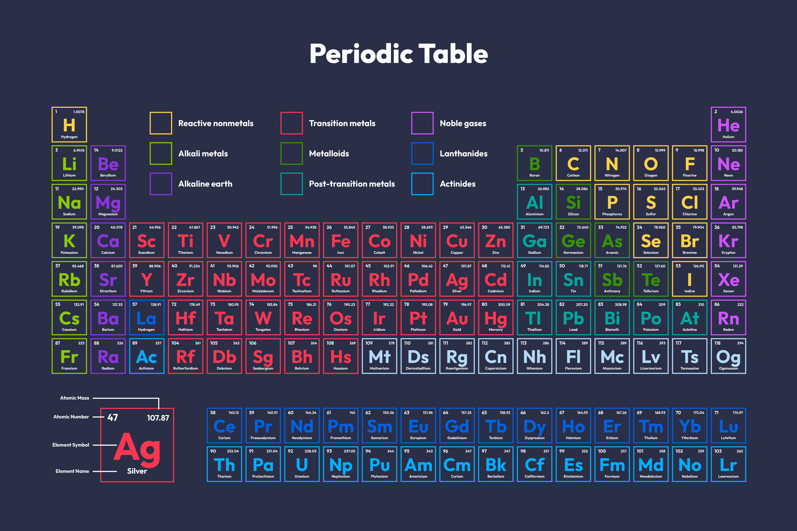

Hey, I’m
MD Ashif Hussain
Computer Science graduate with an interest in data science looking to jumpstart my career in this exciting field. Skilled in Python I have a grasp of statistics and mathematics. My ability to analyze data, combined with my enthusiasm for uncovering insights from datasets fuels my desire to make a meaningful impact, on cutting edge data science initiatives.
Featured projects

Utilizing natural language processing and machine learning techniques to analyze sentiment in tweets related to the FIFA World Cup 2022, including scraping live Twitter data using snscrape to make real-time sentiment predictions.
Python - NLTK - Scikit-learn - Snscrape

Immersive e-Learning tool built with Java and NetBeans IDE, featuring an interactive interface to explore the Periodic Table of Elements. Utilizing MySQL for database management, it provides accurate information based on the latest IUPAC standards, including predicted values for radioactive elements to enhance search functionality
Java - Netbeans - MySQL

Leveraging Tableau to analyze personal streaming data, uncovering trends in listening habits. Exploring key metrics such as total listening time, favorite artists, and genre preferences over time. With interactive dashboards, users can filter by date range, track popular songs, and discover changes in music tastes, providing a deeper understanding of their music consumption patterns
Tableau - Spotify


Developed a Guess the Tune mobile application using Java, offering an engaging and interactive music challenge. Users can enjoy a game that tests their music knowledge by recognizing tunes. The application features a user-friendly interface, diverse music genres, and a scoring system, providing a fun and immersive experience for music enthusiasts
Android - Java - Android Studio
experience
Data Science Intern (In office)
Aug 2023 - Jan 2024
Rubixe
- Developed an AI-based food classification model that identifies nutritional content from a single picture, successfully classifying 8 food categories across Indian, Italian, and American cuisines.
- Collaborated with a cross-functional team of 15+ members to create a user-friendly application, contributing to the decision making and improving ability to work in a team.
- Led efforts to improve model robustness by conducting over 50 simulations and analyses; established a foundation that supports the incorporation of 3 additional food categories, enhancing analytical thinking and ability to learn.
Data Science Intern (In Office)
Jan 2023 - Jun 2023
LICET - OpenWeaver
- Automated data analysis pipelines leveraging NumPy and Pandas, resulting in a 50% reduction in manual processing time; enhanced data retrieval and processing efficiency and attention to detail for ongoing projects.
- Designed and tested a predictive analytics model for heart disease, processing 14 variables from 500+ patient records, this led to an improvement in problem-solving skills.
Data Analytics and Visualization (Remote)
July 2022
Accenture North America Data Analytics and Visualization Job Simulation on Forage
- Completed a simulation focused on advising a hypothetical social media client as a Data Analyst at Accenture.
- Cleaned, modelled and analyzed 7 datasets to uncover insights into content trends to inform strategic decisions.
- Prepared a PowerPoint deck and video presentation to communicate key insights for the client and internal stakeholders.
Data Analytics (Remote)
Jan 2022
Quantium Data Analytics Job Simulation on Forage
- Completed a job simulation focused on Data Analytics and Commercial Insights for the data science team.
- Developed expertise in data preparation and customer analytics, utilizing transaction datasets to extract valuable insights and deliver data-driven commercial recommendations.
- Extended analytical capabilities to identify benchmark stores for conducting uplift testing on trial store layouts, enabling evidence-based decision-making.
- Leveraged acquired data analytics and insights from previous tasks to create comprehensive reports for the Category Manager, facilitating informed strategic decisions and enhancing commercial applications.
contact